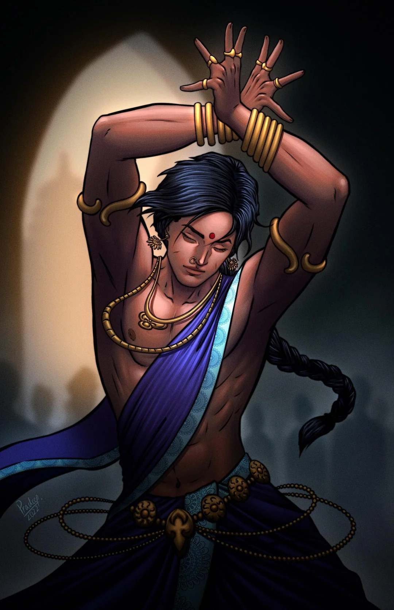
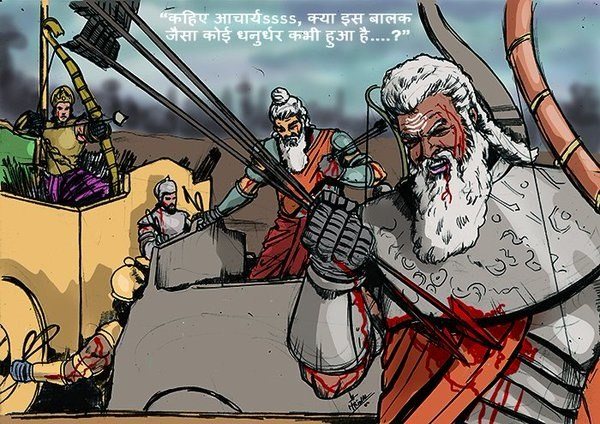

The Pandavas were worried about the successful ending of their thirteenth year of exile, the period which they had to pass unrecognized. Duryodhana has mandated that if the Pandavas were recognized during the thirteenth year of their exile, they would have to remain in exile for another thirteen years. According to Veda Vyas’ advice the Pandavas went to the kingdom of Virata in disguise. In the mean time Duryodhana sent his spies to discover Pandavas’ hideout. Hiding their weapons, the Pandavas entered the kingdom of Virata. They were not recognized by king Virata and he welcomed them. The Pandava brothers and princess Draupadi requested King Virata to give them some jobs. Virata willingly agreed. Yudhisthira, disguised as a Brahmin, became one of king’s trusted advisors. Bheema became the chief cook. Arjuna who had learnt the art of dance and music from Chirtrasen at Indraloke, was cursed by Urbashi, a beautiful dancer of heaven, to remain a eunuch for a year. So Arjuna found it convenient to become a dance and music teacher for princess Uttara. Nakula became the royal groom and Sahadeva, the royal cowherd. As for Draupadi, she became Queen Sudeshana’s maid.

Things were going well until the queen’s evil brother, Keechak, the commander of Virata’s armies, became interested in Draupadi. Keechak asked for Draupadi’s hand in marriage. Draupadi, being happily married to the Pandava brothers, refused. Keechak, thinking her to be only a maid, felt insulted to have been turned down. He decided to force himself into Draupadi’s chamber one night. As soon as Draupadi heard of this plan, she begged Bheema to rescue her. Bheema, disguised as Draupadi, lay on the bed. When Keechak stealthily entered Draupadi’s room, Bheema sprung out of the bed and killed him. The next day Keechak’s corpse was discovered in Draupadi’s room, with no clue as to who was the assailant. To save Bheema from the Queen’s wrath, Draupadi told her that Keechak had entered her room, without her permission. When she had screamed, someone had come in and killed Keechak and she had no idea of his identity. The queen apologized for her brother’s misdeeds, but never learnt the truth about Bheema’s action. In the mean time, Duryodhana had sent his men to every corner of the earth to discover the Pandavas’ hideout. He knew that if he could locate the Pandavas, who were men of honor, they would never go back on their words and would start their exile all over. He was happy to hear of Keechak’s death, as he had been a great threat to his kingdom. But he knew no ordinary man could kill the mighty Keechak and so he suspected that Bheema could be the assailant. He decided to invade the kingdom of Virata. In no time Duryodhana’s army attacked Virata while Duryodhana planned to personally attack Virata’s palace from the rear. As the war approached, Yudhishthira offered the services of himself and his family to Virata. This was an expression of his gratitude towards Virata for providing them shelter. All his brothers, except Arjuna, joined the army and in no time captured Susharma. Duryodhana, unaware of Susharma’s captivity, attacked Virata’s palace from the rear. The young prince Uttar was the only man left in the palace as all the others had already left for the war. When the women teased Uttar for hiding in the palace, he came up with the plea that he did not have a charioteer and hence could not go war.

When Arjuna heard of this, he promptly offered his services. He first took the chariot to the tree where he had hid his weapons almost a year ago. Uttar was puzzled but kept quiet, as he was afraid to face the Kaurava army. Arjuna guessed the situation and asked Uttar to take his place as a charioteer while he does the fighting. Uttar agreed. When Arjuna blew his conch the Kaurava army immediately recognized Arjuna. Duryodhana was happy to locate the Pandavas. But to his utter disappointment Duryodhana soon learned that the thirteenth year had just been completed. Arjuna single handedly defeated the army and Duryodhana fled from the battlefield. During the victory celebration Yudhishthira explained to Virata the details of their thirteenth year of exile under his protection. All the Pandavas expressed their gratitude to Virata. Virata was overwhelmingly happy and agreed to give his daughter Uttara in marriage to Arjuna’s son Abimanyu. Subhadra and Abhimanyu were called and they came with Krishna and Balarama. The marriage celebration went on for several days uniting the Pandavas with their friends and relatives.